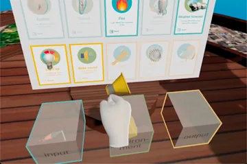
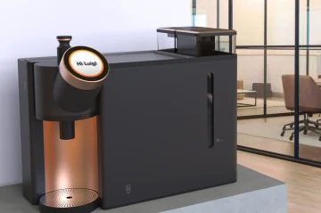
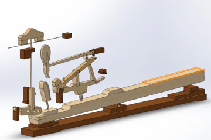

堀内贵文 设计工程师
近期自主项目


过往学术研究
-
 关于人与机器人互动设计的硕士论文 （2021年7月）
将操作者是否“在看”转换为机器人可以动作的条件。将人的认知状态纳入安全控制，提出并实现了无需事前对象注册即可防止碰撞的机制。
关于人与机器人互动设计的硕士论文 （2021年7月）
将操作者是否“在看”转换为机器人可以动作的条件。将人的认知状态纳入安全控制，提出并实现了无需事前对象注册即可防止碰撞的机制。
-
 关于约束型编程的毕业论文 （2019年6月）
在模拟中，识别出永远无法成立的条件并将其排除在搜索之外。在不改变结果的情况下减少了计算量，使评估模型的运行时间约减半。
关于约束型编程的毕业论文 （2019年6月）
在模拟中，识别出永远无法成立的条件并将其排除在搜索之外。在不改变结果的情况下减少了计算量，使评估模型的运行时间约减半。
-

面向儿童的交互式物件原型设计VR系统的开发（2021年2月） 把孩子们在SNaP桌游中构思的智能物件放到VR空间里组装并运行——环境、输入、输出三张卡片成为条件与行为。 -

三个Design Studio项目 (2019年–2020年) 共享空间咖啡机、焊工用PAPR和非接触式献血筛查终端：米兰理工大学的三个小组产品设计项目。 -

钢琴击弦机的运动分析（2020年1月） 依据剖面图把钢琴击弦机做成3D模型，确认琴键的输入如何变成琴槌的速度与琴弦的反作用力。
关于「设计」，我现在的想法
AI 能够在给定的条件下生成多样的内容。但真正决定什么能够被生成的，是交给它的那个设计空间。目的、价值、优先级、约束、禁止事项、评判结果的标准——这些划定了边界，AI 在边界之内探索。我们设计的是这个空间本身，而不是某一件成果；我把这种做法称为“约束型设计”。约束是为了留住可能性，而不是关闭它们；最终以什么形态面世，仍然由我们决定——这需要判断形态的眼光。设计出空间，再从中选定一个形态，并把它做到底。同时承担这两件事，在我的理解里，就是 AI 已经能够生成的时代中设计师的工作。